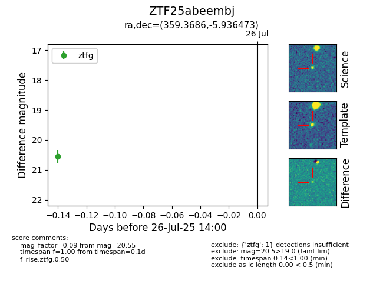

Target ZTF25abeembj at 2025-07-26 14:00, see:
FINK: fink-portal.org/ZTF25abeembj
Lasair: lasair-ztf.lsst.ac.uk/objects/ZTF25abeembj
ALeRCE: alerce.online/object/ZTF25abeembj
alt names
ZTF25abeembj (ztf,fink)
coordinates:
equatorial (ra, dec) = (359.3686,-5.93647)
galactic (l, b) = (89.3113,-65.22356)
photometry
last ztfg=20.55
1 ztfg detections
